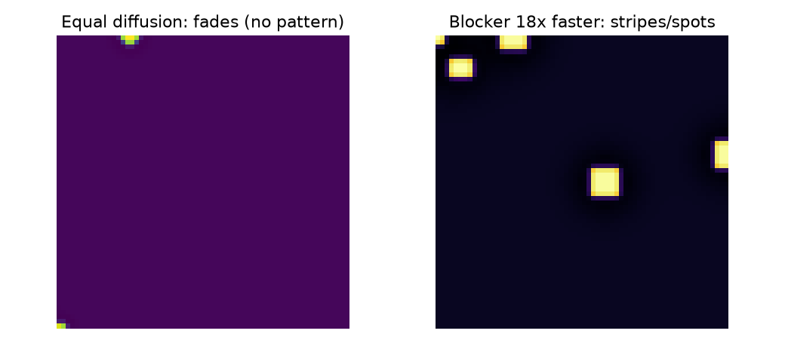
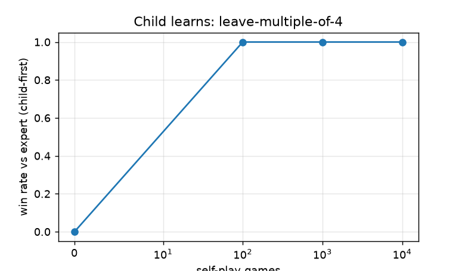
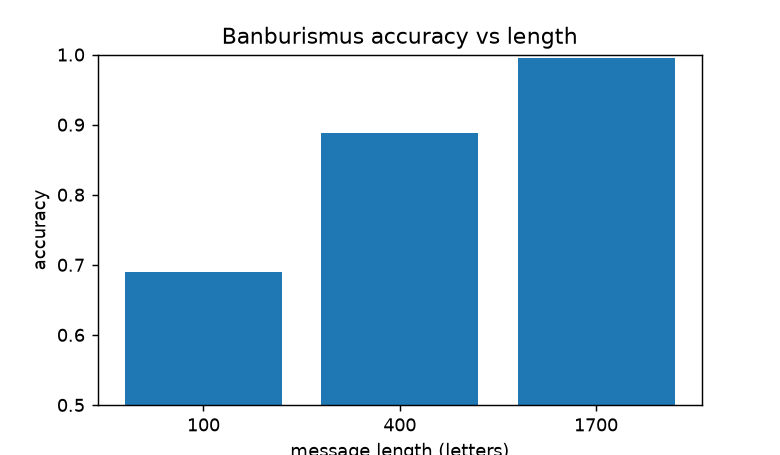

CEO summary: One repo rebuilds nine Turing breakthroughs as small Python programs and runs every claim: a machine that adds 1, one machine that runs all machines, proof no perfect bug-finder can exist, a historically accurate Enigma, a Bombe that cracks a fresh random key, evidence weighed in decibans, the imitation game, a child that learns to win, and chemicals that draw stripes. Measured, reproducible, and live-data checked — in about 30 seconds on your laptop.
Let's work this out in a step-by-step way to be sure we have the right answer. That single sentence is the whole method of this repo: never assert, always run.
make verify. Watch 25+ PASS lines. You now know more than most interview candidates: what a Turing machine is, why Enigma never maps a letter to itself, and why that one flaw broke 159 quintillion settings.make bombe (cracks a random key), make benchmark (rates + curves), make live (today's BTC/FX through the same math).Interview superpower: you can whiteboard the Bombe in 3 sentences — guess plaintext (crib), discard alignments where a letter equals itself, propagate plug guesses until contradiction; one survivor is the key. Then show the terminal doing it.
make verifymake bombe → 1 survivor, true key, plaintext back.Static proof first — generated by running the code, committed in docs/:

Left: equal diffusion fades. Right: blocker 18× faster → stripes/spots. No drawing — cells only talk to neighbours.


pip install -r requirements.txt make verify # ALL PASS — film this make bombe # watch: 1 survivor, true key, plaintext back make live # live BTC/FX scored in decibans
Record with asciinema rec demo.cast then agg demo.cast demo.gif, or capture the above with any screen recorder and upload the MP4 via a GitHub issue to embed it here. Keep the GIF under ~5MB so this page stays fast.
| Metric | Value |
|---|---|
| TM increments/s | ≈508k |
| Enigma letters/s | ≈1.29M |
| Bombe window (601 settings) | 3.9s, 1 survivor |
| BB5 throughput → full 47,176,870 | 10.7M/s → ≈4.4s |
| Banburismus 100/400/1700 | 69.0 / 88.8 / 99.5% |
Refresh: make benchmark → results/benchmark.json.
BTC ≈ $83,316 (live), USD→EUR 0.88739 / GBP 0.75322 / JPY 158.09 (live). Returns → A–Z stream scores +69.4 dB self-match vs −1.3 dB shuffled — the 1941 math works outside English. Live-stamped message round-trips through Enigma. Refresh: make live (offline-safe with fallbacks; provenance in results/live_verification.json).
Answer step by step. Explanations appear after each choice. Score 7+ and you can teach this.
Reasoning habit: for every answer, say aloud: prediction → run → observe. That is the whole repo.
make bombe as a lab; grading = PASS lines.preview.html and docs/*.png at these paths.https://<you>.github.io/<repo>/preview.html. That is this page. The README links here; this page links back..nojekyll (already included) so Pages serves files exactly as committed.git clone <this-repo> && cd turing-* pip install -r requirements.txt make verify # ALL PASS (~30s) make bombe # crack a fresh random key (~4s) make benchmark # rates → results/benchmark.json make live # live BTC/FX → results/live_verification.json pytest -q docker compose up # same inside pinned image